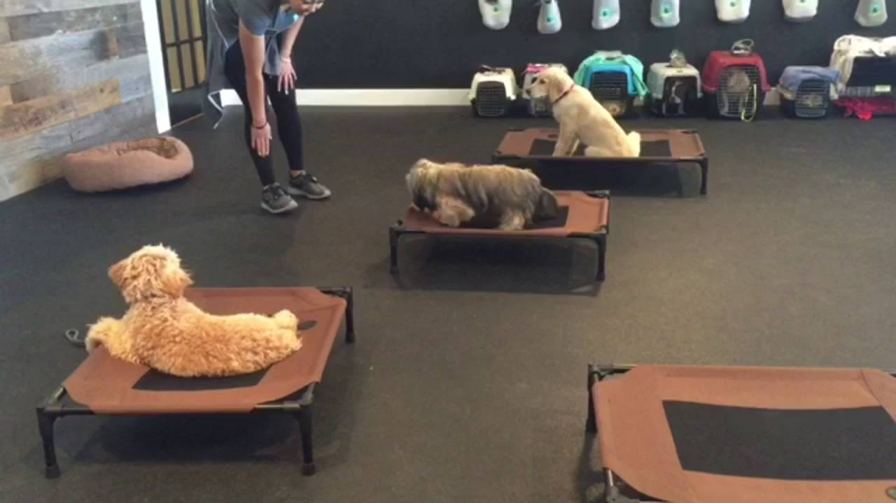

Leash Training
|
Information on safe locations to practice, and how
Nearly every dog owner has the same worries about letting their dog off their leash: What if they don’t come back? What if they get injured? It’s not hard to imagine the reasons for keeping a dog on a leash — safety from cars, other dogs, other people, wildlife, and potential hazards like rodenticides in public parks — but are there benefits to having your dog off-leash? There certainly can be! Here are a few of the benefits that dogs can experience when they're allowed to go (safely) off-leash: They can exercise and play in ways they can’t in your home or on-leash (e.g., playing chase with other dogs, playing fetch, participating in agility training, etc.) They can develop more confidence (e.g., by getting to explore a bit more, problem solving, making (hopefully) good choices, and interacting more naturally with other dogs) They will have more freedom and an outlet to burn excess energy (e.g., off-leash dogs that "check in" with you frequently, as they should, often cover significantly more mileage with all of their back-and-forth running) Of course, letting your dog go off-leash can lead to altercations, injuries, poisonings, and other problems. So before you “release the hounds,” follow the tips below to make sure that you’re keeping your off-leash dog as safe as possible. And recognize too that it's not just your dog that's exposed to risk when they're off leash, plenty of other dogs (including service dogs), people (including kids), and wildlife have been injured or emotionally scarred by an off-leash dog. So please, be truly considerate and always pay attention to and follow posted leash law signs and rules. |
|
 |
|---|
Click here to go to the previous page